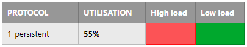
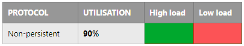
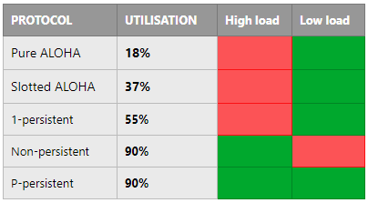

CSMA (Multiple Access Protocol)
There is 1 big disadvantage to ALOHA protocols, and I did try to make it pretty obvious:
Thing is, it is very difficult to listen to a satellite network before sending, because of the enormous distances signals must travel.
CSMA is another class of Multiple Access Protocols that is used in LAN's, and allows users to listen before sending.
Some people refer to CSMA as a polite protocol, because it listens before it talks.
CSMA in a nutshell, verifies the absence of other network traffic before transmitting data on a shared medium. This prevents bit collisions from occurring.
Remember the 'Critical Time' thing in the previous section on ALOHA?
In CSMA, the critical time is exactly the same as it was in ALOHA - (Critical Time = 2T, where T = time taken to send a frame)
In fact, for all collision detection methods, this will always be the critical time. Don't confuse collision detection with collision prevention. Preventing collisions is a totally different story, and it would not be 2T
There are 4 types of CSMA:
- 1-Persistent
- Non-Persistent
- P-Persistent
- CSMA/CD
1-Persistent
This CSMA variant has a probability of 1 to transmit the complete frame when it can. - hence the name 1-Persistent
As soon as the idle channel has been detected, boom, transmission is done.
Here is the algorithm in my 'wavy-arm' pseudo-code:
if (there is data to send) {
listen to channel...
if (channel is busy) {
wait until idle...
}
if (idle channel is detected) {
transmit the complete frame // transmit with a probability of 1
}
if (frame is damaged) {
wait random amount of time and start again // the time is decided by the Binary Exponential Backoff algorithm
}
}
The algorithm is greedy, it sends everything as soon as idle.
Disadvantages of 1-Persistent:
- If 2 users are waiting, both will detect that it has become idle and then transmit at the same time -> bad utilisation under high load where potentially hundreds of users are waiting.

Non-Persistent
This CSMA variant is less greedy than 1-persistent.
Users are very patient in Non-persistent. No two users will be allowed to talk at the same time. This reflects CSMA's polite nature.
Here is the algorithm in my 'wavy-arm' pseudo-code:
if (there is data to send) {
listen to channel...
if (channel is busy) {
wait random amount of time. Once that time is over, go to beginning again. // the time is decided by the Binary Exponential Backoff algorithm
}
}
The algorithm provides fantastic utilisation, which results in fewer collisions.
Disadvantages of Non-Persistent:
- There will naturally be long delays when dealing with random waiting time.

P-Persistent
This CSMA variant applies only to 'slotted' channels (channels that are divided into slots)
1 slot = 1 frame transmission time
Here is the algorithm in my 'wavy-arm' pseudo-code:
if (there is data to send) {
listen to channel...
if (channel is idle) {
transmit with probability P // so it will either do the transmission, or defer the transmission
}
}
- Probability that the transmission occurs = P
- Probability that it defers transmission = 1 - P
For example...
1 - P
= 1 - 0.25
= 0.75
So there is a 25% chance the data will be sent immediately
And there is a 75% chance the data will be deferred.
Here's a cool graph that compares the utilisation of each Multiple Access Protocol we have looked at so far:

And here is a summary table of the utilisations of each protocol.
CSMA/CD
This is CSMA with Collision Detection.
It is the most sophisticated variation of the CSMA protocol we have looked at so far.
Widely used on LAN's especially in classic Ethernet.
With CSMA/CD we listen whilst transmitting. That is something we have not been able to do with any of the previous protocols.
This is hugely advantageous because it means we can transmit data and check for collisions all at the same time.
Also there is no need for ACK's or NAK's in CSMA/CD.
CSMA/CD can be in one of the following three states:
- Contention
- Transmission
- Idle
Here is some 'wavy-arm' pseudo-code for CSMA/CD:
if (station detects collision) {
abort transmission!
wait a random period of time until next re-transmission // time decided by the Binary Exponential Backoff algorithm
}